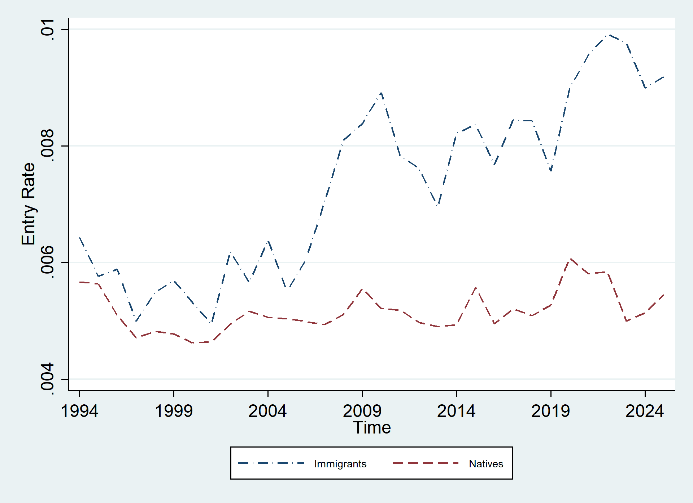
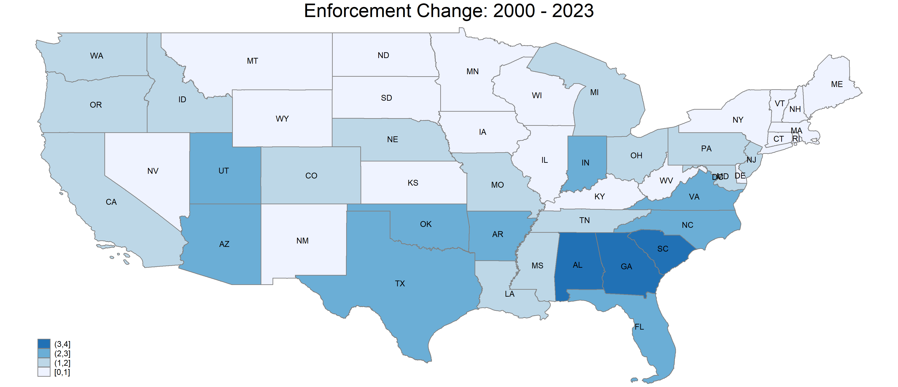
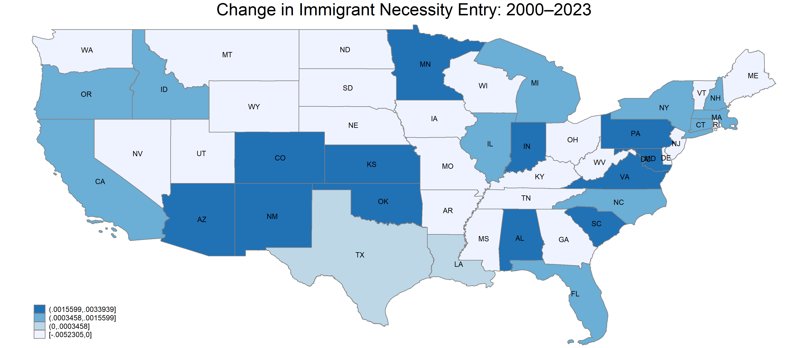

Chunbei Wang | Virginia Tech
The gap has widened since the mid-2000s

What drives the rise in immigrant entrepreneurship?
The timing coincides with tighter immigration enforcement.
Increase?
Decrease?
Answer
↑
Large increase in self-employment.
Mostly necessity-driven.
↓
Sharp decline post-9/11.
Uncertainty and potential discrimination.
So what happens overall?
Hispanic immigrants drive the overall rise:
This partly drives the overall rise in immigrant entrepreneurship rates.
Necessity entrepreneurship rises most where enforcement is strongest


Core Insight
The rise in immigrant entrepreneurship is not just about opportunity.
It is partly driven by constraint.
Takeaway
Entrepreneurship statistics don't always reflect opportunity.
The increase in immigrant entrepreneurship is real, but much of it is driven by necessity, not expanding opportunity.
More entrepreneurs does not always mean more opportunity.